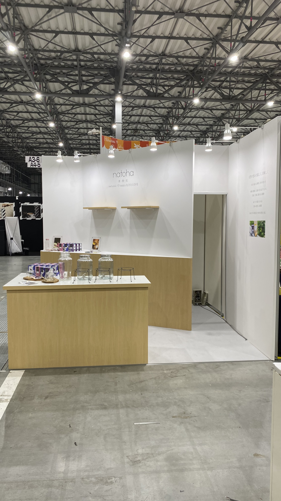
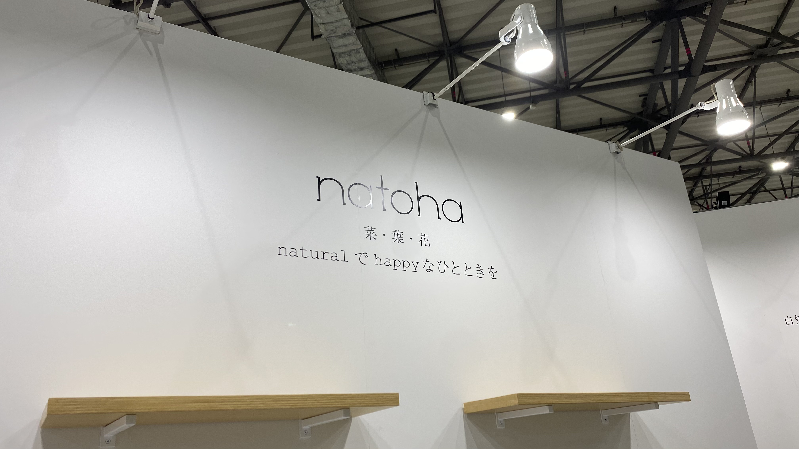
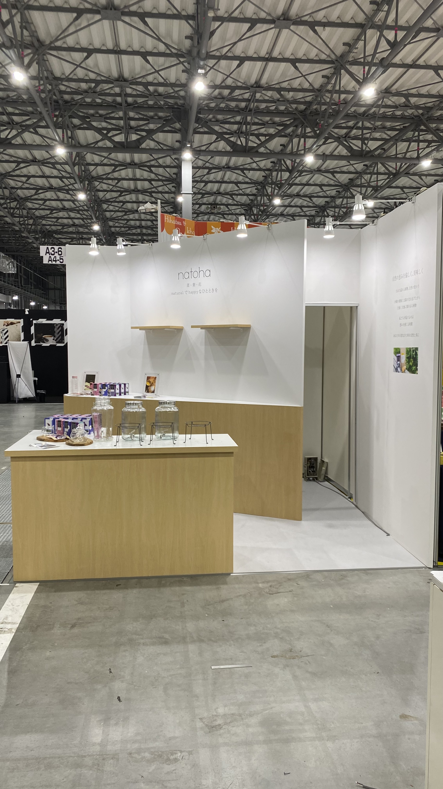
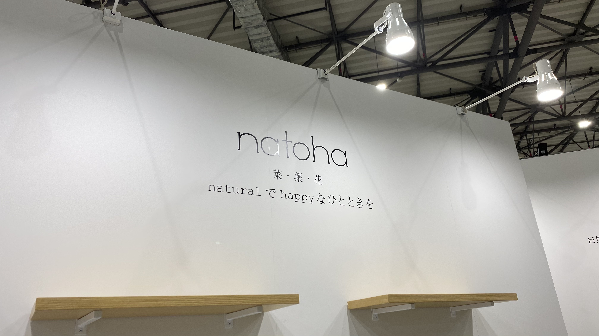

WORK
制作実績



CONCEPT
"テーマは、ナチュラルさ"
ブランドイメージのオーガニックで100%国内生産の原料を使い丁寧に作られた商品のナチュラルさを表現したブースデザインになります。
ロゴのシンプルさを崩さずにナチュラルさを木目と白の組み合わせにすることで、洗練された空間を演出することができ空間に余白を
作ることで商品や世界観をよりはっきりと伝えることを軸にブースを設計しました。
f.style0101@gmail.com
制作実績


ブランドイメージのオーガニックで100%国内生産の原料を使い丁寧に作られた商品のナチュラルさを表現したブースデザインになります。
ロゴのシンプルさを崩さずにナチュラルさを木目と白の組み合わせにすることで、洗練された空間を演出することができ空間に余白を
作ることで商品や世界観をよりはっきりと伝えることを軸にブースを設計しました。